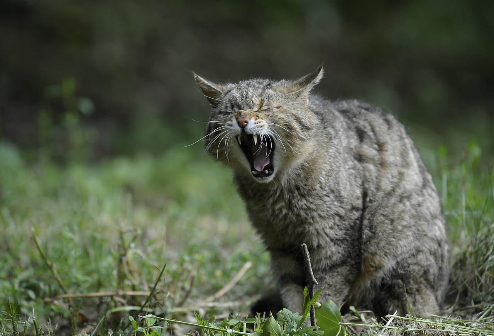

1.分類
学名︰Felis silvestris catus
ネコ（猫）は、狭義には食肉目ネコ科ネコ属に分類されるリビアヤマネコ（ヨーロッパヤマネコ）が家畜化されたイエネコに対する通称である。
イヌ（犬）と並ぶ代表的なペットとして日本を含め世界中で広く飼われている。より広義には、ヤマネコやネコ科動物全般を指すこともある。
※リビアヤマネコ※ヤマネコ
2.身体的特徴
非常に優れた平衡感覚に、柔軟性と瞬発力のきわめて高い体の構造、武器である鋭い鉤爪（かぎづめ）や牙を持ち、足音が非常に小さい。
ネコの体は非常に柔軟性が高い。関節が緩やかで、筋肉や靭帯も柔らかいため、頭の周り以外は体のほぼ全ての場所を自分で舐めることができる。
また、内臓を前後に移動させることができ、これを利用する形で狭い場所を通ることが出来るよう身体の幅を自在に調節することが可能となっている。
3.生態的特徴

顔の大きさの割に、かなり大きな眼を持っている。他の動物における幼獣の眼の大きさの比率に近く、これがネコを可愛いと思わせる一因にもなっている。
ネコの体は非常に柔軟性が高い。関節が緩やかで、筋肉や靭帯も柔らかいため、頭の周り以外は体のほぼ全ての場所を自分で舐めることができる。
4.食性／繁殖
食性
ネコの本来の食性は肉食性である。たんぱく質や脂質を必要とし、半野生的な生活を送っているネコは、生きた小獣・小鳥・小型爬虫類・小型両生類・小魚・小型節足動物といった小動物を捕食し、また飼育下に置かれているネコは与えられた獣肉・魚肉や、からそれらの栄養素を摂取する。
繁殖
おおむね生後6か月から12か月で性的に成熟し、その後、定期的に発情する。発情の周期についてはいくつかの説がある。 ネコは長日繁殖動物のため、暖かい時期と日照時間が14時間程度になる時期に発情がくる。
5.生息分布
日本では、後述のように多数の猫が生息している離島がみられる。 海外では、マルタ島も「1度は行ってみたい猫の天国」と呼ばれ、人口の倍にのぼる猫が生息する。 ギリシャのミコノス島、猫は神様の使者とされるバリ島、スペインフォルメンテーラ島も猫が多く生息する。
※マルタ島6.起源／歴史
イエネコの起源は、ネズミを捕獲させる目的で飼われ始めたリビアヤマネコの家畜化である。 今日のイエネコの直接的・系統的起源は明らかではないが、紀元前3000年ごろの古代エジプトで固定化されたものといわれている。紀元前1600年ごろの古代エジプトの王墓に描かれたネコの壁画が確実な証拠である。